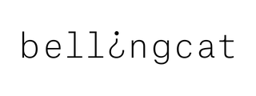
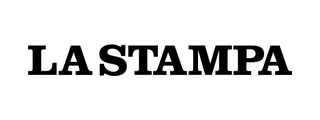
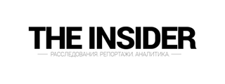

SONARROW is a collective of open-source (OSINT) investigators documenting emerging threats since 2024.
We no longer want to talk about “hybrid warfare”. We are in a pre-war phase, in which maritime flows, sanctions evasion and the movements of Russia’s shadow fleet are becoming major strategic indicators.
Our work has been picked up by some thirty investigative media outlets around the world, including Bellingcat, France 24, La Stampa and The Insider.
The team
Medusa, Shark and Orca.
Partners
@InsiderGeo and @debunkcafe.
In the press


